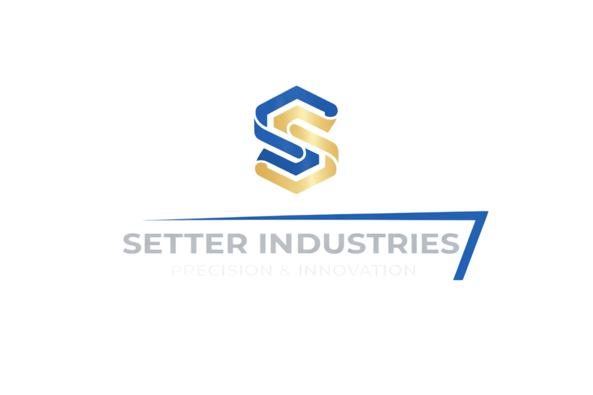

Defence · Engineering · Technology
Veteran-founded software, simulation and engineering support for government, defence primes and industry. From discovery and feasibility through to working prototypes, integration and technical delivery.
Setter Industries supports government, defence primes and technology partners with small, clearly bounded work packages where speed, specialist expertise and direct access to the delivery engineer matter.
We are particularly suited to discovery work, technical studies, demonstrators, software utilities, modelling tasks, simulation support, systems integration and subcontract engineering packages.
Practical engineering outputs with defined scope, traceable decisions and clear acceptance evidence.
Bespoke desktop, mobile and web tools, data processing utilities, APIs and technical demonstrators designed around the user and mission need.
Requirements capture, interface definition, trade studies, architecture support, verification planning and lifecycle documentation.
Scenario, entity, behaviour and environment development across established simulation platforms, including integration and exercise support.
Software, CAD, 3D printing and integrated proof-of-concept systems used to test assumptions before committing to larger programmes.
Procurement support, installation, configuration, acceptance testing and integration of simulation, VR, AR and training technologies.
Independent advice grounded in operational experience, software delivery and defence training and simulation environments.
Send a high-level description of the requirement, intended outcome and timescale. Please do not submit classified or sensitive material through the website.